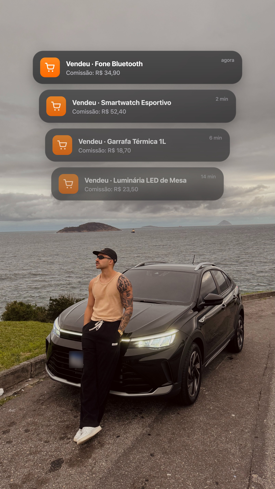

Responda 4 perguntas e descubra o que está te impedindo de fazer suas primeiras vendas como afiliado.
Como começar na prática: escolher o produto, montar o vídeo e fazer a primeira venda
Passo a passo direto no seu WhatsApp
Preencha para receber o passo a passo no seu WhatsApp.
Seus dados são usados só para este atendimento.